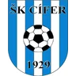
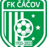

Tabuľky
Ročník 2026/27, poradie podľa Sportnetu.
V. liga Severozápad
A-mužstvo
| # | Tím | Z | V | R | P | Skóre | B |
|---|---|---|---|---|---|---|---|
| 1 | 15 | 10 | 3 | 2 | 30:15 | 33 | |
| 2 | 15 | 10 | 3 | 2 | 44:22 | 33 | |
| 3 | 15 | 10 | 1 | 4 | 29:12 | 31 | |
| 4 | 15 | 8 | 5 | 2 | 36:20 | 29 | |
| 5 | 15 | 8 | 4 | 3 | 35:20 | 28 | |
| 6 |  ŠK Cífer 1929 | 15 | 7 | 3 | 5 | 40:18 | 24 |
| 7 | 15 | 7 | 3 | 5 | 23:18 | 24 | |
| 8 | 15 | 7 | 3 | 5 | 39:24 | 24 | |
| 9 | 15 | 6 | 5 | 4 | 30:20 | 23 | |
| 10 | 15 | 6 | 3 | 6 | 28:33 | 21 | |
| 11 | 15 | 5 | 3 | 7 | 18:33 | 18 | |
| 12 | 15 | 4 | 3 | 8 | 19:37 | 15 | |
| 13 | 15 | 3 | 3 | 9 | 20:40 | 12 | |
| 14 | 15 | 2 | 2 | 11 | 19:34 | 8 | |
| 15 | 15 | 2 | 2 | 11 | 8:35 | 8 | |
| 16 | 15 | 1 | 2 | 12 | 13:50 | 5 |
IV. liga U19 ZsFZ
Starší dorast U19
| # | Tím | Z | V | R | P | Skóre | B |
|---|---|---|---|---|---|---|---|
| 1 | 12 | 11 | 1 | 0 | 72:5 | 34 | |
| 2 | 12 | 9 | 1 | 2 | 100:23 | 28 | |
| 3 | 12 | 8 | 1 | 3 | 74:30 | 25 | |
| 4 | TJ Tatran Jablonica | 12 | 7 | 3 | 2 | 33:26 | 24 |
| 5 | ŠK Baník Čáry | 12 | 8 | 0 | 4 | 59:37 | 24 |
| 6 | 12 | 7 | 1 | 4 | 64:23 | 22 | |
| 7 | 12 | 7 | 1 | 4 | 47:49 | 22 | |
| 8 | 12 | 3 | 2 | 7 | 35:52 | 11 | |
| 9 | 12 | 2 | 3 | 7 | 37:41 | 9 | |
| 10 | 12 | 3 | 0 | 9 | 19:72 | 9 | |
| 11 | 12 | 2 | 3 | 7 | 23:53 | 9 | |
| 12 | 12 | 2 | 2 | 8 | 22:58 | 8 | |
| 13 | 12 | 0 | 0 | 12 | 9:125 | 0 |
IV. liga mladších žiakov U13 ObFZ Senica
Mladší žiaci U13
| # | Tím | Z | V | R | P | Skóre | B |
|---|---|---|---|---|---|---|---|
| 1 | 13 | 13 | 0 | 0 | 78:11 | 39 | |
| 2 | 12 | 9 | 0 | 3 | 69:21 | 27 | |
| 3 | 13 | 8 | 0 | 5 | 75:36 | 24 | |
| 4 | 13 | 8 | 0 | 5 | 59:39 | 24 | |
| 5 | TJ Tatran Jablonica | 13 | 8 | 0 | 5 | 69:39 | 24 |
| 6 | 13 | 7 | 2 | 4 | 61:29 | 23 | |
| 7 | 13 | 6 | 2 | 5 | 37:34 | 20 | |
| 8 | 12 | 4 | 0 | 8 | 29:63 | 12 | |
| 9 | 12 | 3 | 0 | 9 | 28:35 | 9 | |
| 10 | 13 | 1 | 0 | 12 | 12:127 | 3 | |
| 11 | 13 | 1 | 0 | 12 | 21:104 | 3 |
Prípravka U11 ObFZ Senica
Prípravka U11
| # | Tím | Z | V | R | P | Skóre | B |
|---|---|---|---|---|---|---|---|
| 1 | TJ Tatran Jablonica | 12 | 11 | 0 | 1 | 98:30 | 33 |
| 2 | 12 | 10 | 1 | 1 | 113:17 | 31 | |
| 3 | 12 | 9 | 2 | 1 | 93:24 | 29 | |
| 4 | 12 | 9 | 1 | 2 | 107:21 | 28 | |
| 5 | 12 | 7 | 0 | 5 | 62:51 | 21 | |
| 6 | 12 | 5 | 2 | 5 | 56:62 | 17 | |
| 7 | 12 | 4 | 1 | 7 | 52:76 | 13 | |
| 8 | 12 | 4 | 1 | 7 | 19:49 | 13 | |
| 9 | 12 | 4 | 0 | 8 | 36:110 | 12 | |
| 10 | 11 | 2 | 2 | 7 | 33:52 | 8 | |
| 11 | 11 | 1 | 0 | 10 | 16:120 | 3 | |
| 12 | 12 | 0 | 0 | 12 | 18:91 | 0 | |
| 13 |  FK Čáčov 1933 | 0 | 0 | 0 | 0 | 0:0 | 0 |
III. liga prípraviek U9 ObFZ Senica
Prípravka U9
| # | Tím | Z | V | R | P | Skóre | B |
|---|---|---|---|---|---|---|---|
| 1 | 14 | 14 | 0 | 0 | 264:40 | 42 | |
| 2 | TJ Tatran Jablonica | 14 | 12 | 0 | 2 | 179:58 | 36 |
| 3 | 14 | 10 | 0 | 4 | 153:79 | 30 | |
| 4 | 14 | 8 | 1 | 5 | 106:95 | 25 | |
| 5 | 14 | 7 | 1 | 6 | 100:147 | 22 | |
| 6 | 14 | 7 | 0 | 7 | 104:123 | 21 | |
| 7 | 14 | 7 | 0 | 7 | 97:85 | 21 | |
| 8 | 14 | 2 | 0 | 12 | 72:167 | 6 | |
| 9 | 14 | 2 | 0 | 12 | 64:154 | 6 | |
| 10 | 14 | 0 | 0 | 14 | 33:224 | 0 |